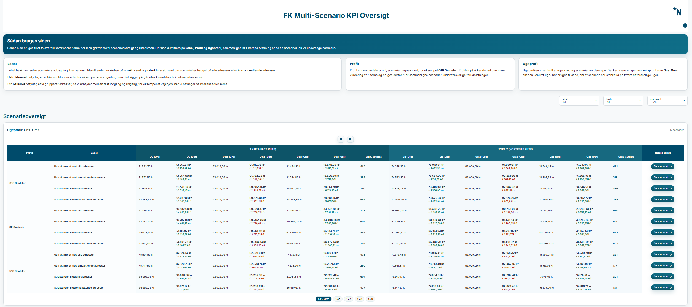
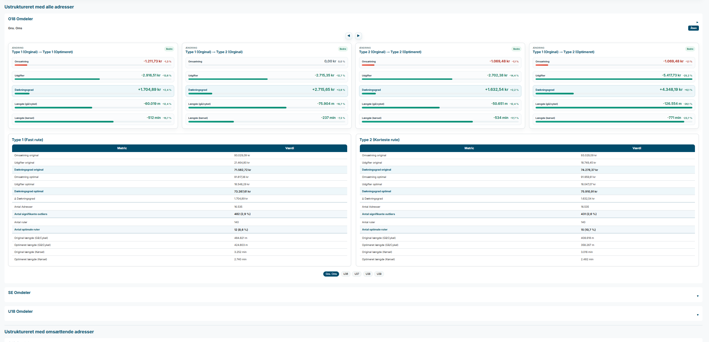

How to use it
- Start with Label, Profile and Analysis period.
- Use the overview to compare revenue, cost and outliers.
- Open the most interesting scenario when you want to go deeper.
- Use the expandable blocks for period and KPI details.
This is the starting point. Use the filters to narrow the scenarios, compare them, and open the one you want to inspect.
These are the main terms used on the overview page.

